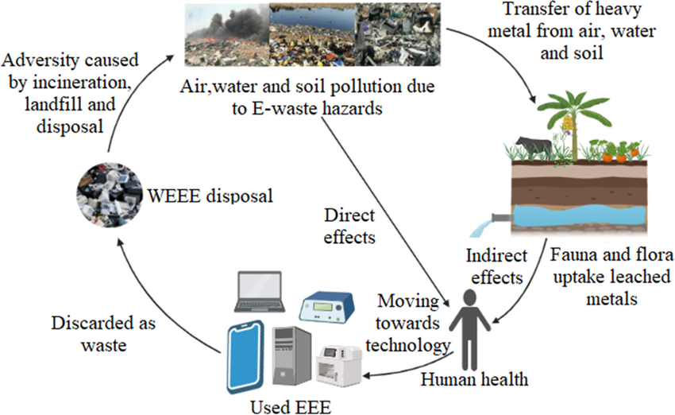

Groundwater is defined as water found underground. It becomes part of river water, which eventually ends up in the ocean. Many people and animals rely on river water as their main water source and animals live and survive in rivers and oceans.
E-waste is one of the main contributors to the pollution of groundwater. Heavy metals and harmful chemicals found in electronic devices leach into the groundwater and other water bodies.
The industrial areas near where e-waste is dumped is located near water sources. Toxic substances from e-waste infiltrate the water and makes the water unsafe for drinking and other purposes.
Chemicals released by e-waste contaminate the food chain. Soil, water, and air are negatively affected by e-waste. This affects plants and hence all food sources are contaminated with unhealthy amounts of chemicals which could bring diseases and death.

Tayba Ebrahim Cassiem
Student at Abbotts HS Centurion
taybacassiem@gmail.com
sd10050291@connect.edu.za
084 738 2480